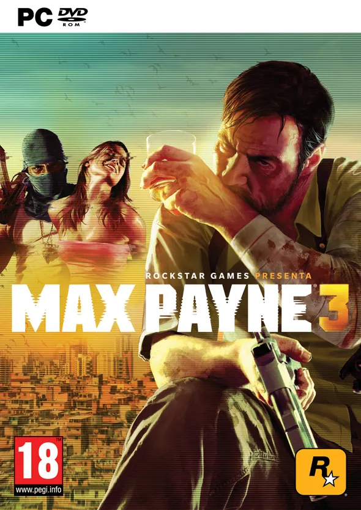
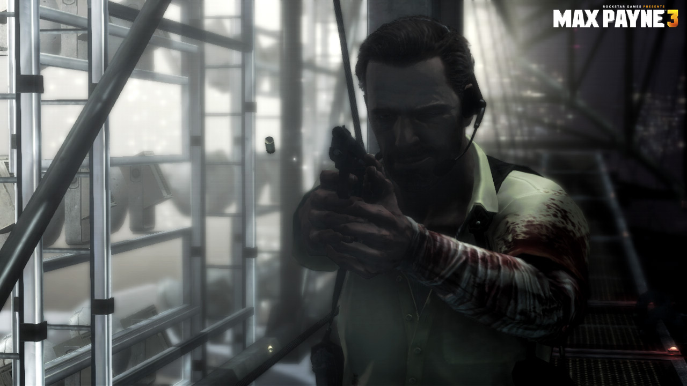
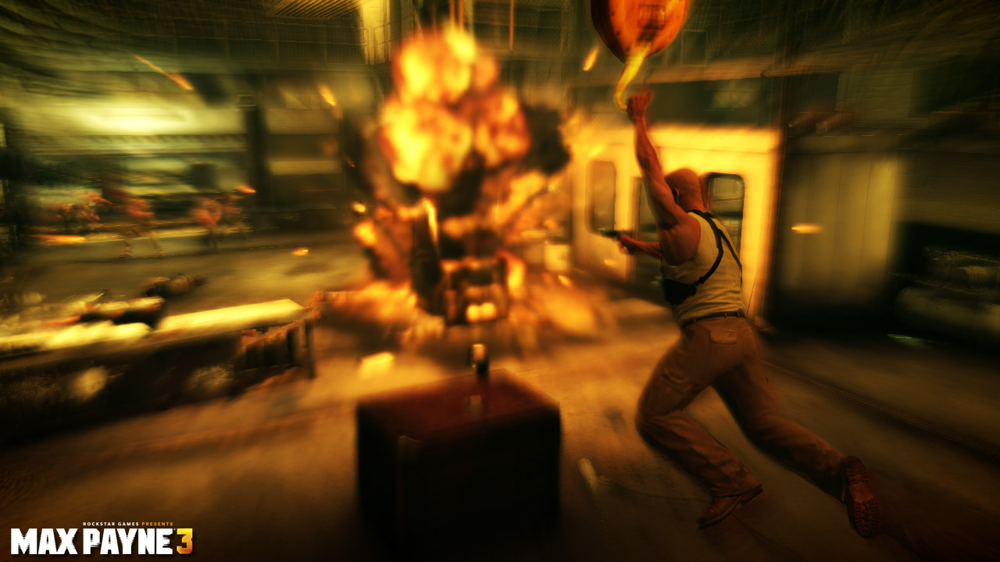
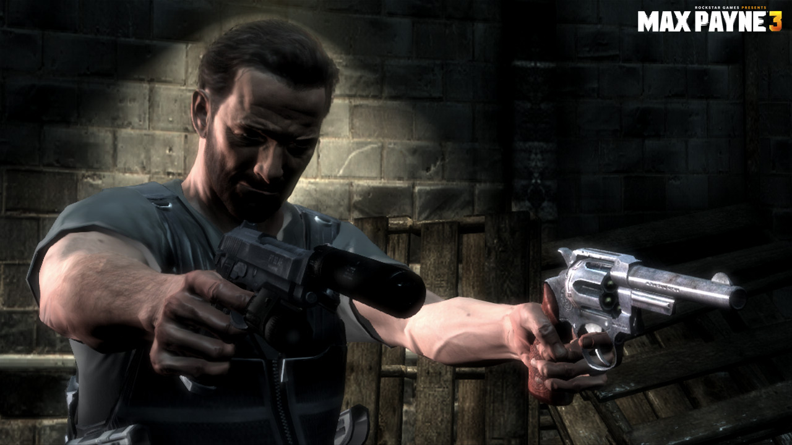
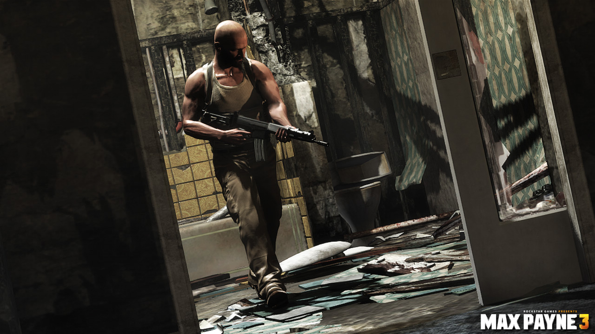

Max Payne 3

Descripción
Max Payne 3 nos presenta a un Max mucho más mayor, cansado y atormentado por su pasado. Esta vez, la aventura nos lleva hasta São Paulo, Brasil, donde trabaja como guardaespaldas para una adinerada familia, los Branco. Sin embargo, lo que parecía una oportunidad para empezar de nuevo acabará convirtiéndose en una auténtica pesadilla cuando varios acontecimientos pongan en peligro a la familia y obliguen a Max a enfrentarse a una peligrosa red criminal.
A lo largo de la historia iremos descubriendo los problemas personales de nuestro protagonista, sus adicciones y los recuerdos que todavía lo persiguen. Todo ello acompañado de una narrativa muy cinematográfica, con numerosos flashbacks y una voz en off que nos permite conocer los pensamientos más oscuros de Max.
En cuanto a la jugabilidad, estamos ante un shooter en tercera persona con unos tiroteos espectaculares. Regresa el mítico sistema de tiempo bala, que nos permite ralentizar la acción para acabar con nuestros enemigos mientras ejecutamos saltos y movimientos acrobáticos. Además, el juego utiliza el sistema de animación Euphoria, que consigue que los movimientos, las físicas y las reacciones de los personajes resulten mucho más realistas.
Como novedad respecto a las anteriores entregas, Max Payne 3 también incorpora un modo multijugador competitivo, en el que podremos enfrentarnos a otros jugadores en diferentes modos de juego.
Capturas del videojuego




Información del videojuego
| Desarrollador | Plataforma | Fecha de lanzamiento |
|---|---|---|
| Rockstar Studios | PC, PS3, Xbox 360, Mac | 15 de mayo de 2012 |